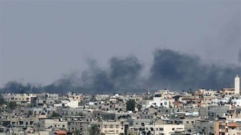

تفاصيل الأحداث
شهدت غزة يوم السبت 10 مايو 2025 تصعيدًا عسكريًا جديدًا، حيث استهدفت غارات جوية مناطق متعددة في القطاع، ما أسفر عن سقوط عشرات الشهداء والجرحى، وأدى إلى دمار واسع في البنية التحتية. شهد القطاع تصاعدًا كبيرًا في وتيرة العنف، مع إطلاق صواريخ متبادلة بين الفصائل الفلسطينية والقوات الإسرائيلية. تركزت الاشتباكات في المناطق السكنية المكتظة، ما أدى إلى تصاعد أعداد المدنيين بين الضحايا. تم استهداف منشآت حيوية مثل محطات الكهرباء والمستشفيات، مما زاد من تفاقم الأزمة الإنسانية. القوات الأمنية الفلسطينية تعمل على حفظ الأمن الداخلي وسط هذا التوتر الشديد، في حين تحذر الأمم المتحدة من خطورة التصعيد وتأثيره على استقرار المنطقة بأسرها.
آخر الأخبار والتطورات الأمنية
في ساعات الصباح الأولى من يوم 10 مايو 2025، شهد قطاع غزة إطلاقًا كثيفًا للصواريخ باتجاه المدن الإسرائيلية، مما أدى إلى تفعيل نظام القبة الحديدية الذي نجح في اعتراض العديد منها، رغم بعض الخروقات التي تسببت بخسائر مادية وبشرية محدودة في إسرائيل. ردت القوات الإسرائيلية بغارات جوية مركزة استهدفت مواقع عسكرية لفصائل المقاومة داخل غزة، مع تحذيرات مكثفة للسكان المحليين في المناطق الحدودية بضرورة الابتعاد عن الأهداف العسكرية حفاظًا على أرواحهم.
كما أعلنت السلطات الصحية في غزة حالة الطوارئ في المستشفيات، مع تزايد أعداد الجرحى الذين يُنقلون بشكل مستمر، في ظل نقص حاد في الأدوية والمستلزمات الطبية. منظمات حقوق الإنسان الدولية أصدرت تقارير تدين استهداف المناطق المدنية والبنى التحتية الحيوية، محذرة من تدهور الوضع الإنساني بشكل كارثي إذا استمر التصعيد. من ناحية أخرى، يُخشى من أن استمرار الحصار والدمار في المنشآت الاقتصادية والبنية التحتية الحيوية سيؤدي إلى تفاقم الأزمة الاقتصادية والمعيشية في غزة خلال الأيام القادمة.
الوضع الإنساني
الوضع الإنساني يزداد تدهورًا، مع انقطاع متواصل للكهرباء ونقص حاد في الأدوية والمستلزمات الطبية. المستشفيات تعمل فوق طاقتها، والآلاف من العائلات نزحت من بيوتها.
ردود الفعل الدولية
صدرت بيانات دولية تدعو إلى ضبط النفس ووقف التصعيد، فيما دعت منظمات إنسانية إلى فتح ممرات آمنة لإدخال المساعدات العاجلة.